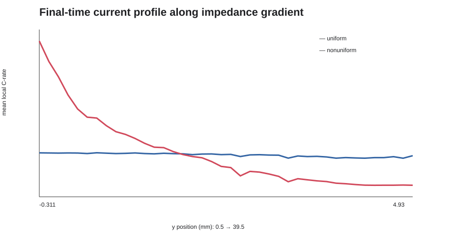

结论
500 s 对照实验接受。 模型重构后电流守恒误差低于 10⁻⁶，SoC 保持在 OCV 有效域；非均匀阻抗使电流变异系数提高约 7.745 倍，并形成最高 5.153 C 的局部热点。
7.745×
非均匀 / 均匀电流 CV
5.153 C
非均匀工况峰值局部倍率
+0.1186 V
非均匀工况端电压变化
原始问题
原模型把局部电压 V2 当作动态状态积分，同时又要求它满足 OCV、活化极化和欧姆极化组成的代数关系。这一混合定义形成病态 DAE，在运行中出现约 ±30 kV 的非物理解。
此外，初始电势与开路状态不一致、电流瞬时加载，以及利用同一边界反力构造强 Dirichlet 约束，进一步放大了首步非线性问题。
校正方法
- 冻结物理语义：Boundary ODE 只推进局部
SOCb，电压不再作为独立动态状态。 - 恢复开路一致性：集流体初值与
OCV(SOC₀)对齐，并使用 1 s 线性电流爬升。 - 改写界面关系：用面积比阻抗 Robin 关系表达上下集流体电压差、OCV 与局部电流之间的代数耦合。
- 设置对照实验：保持 60 Ah、60 A、500 s 相同，只改变阻抗因子的空间分布。
- 域与守恒验收：同时检查积分电流、SoC ∈ [0,1]、求解器日志、产物哈希和空间统计。
重构后的核心关系：
∂SOCb/∂t = C_rate,local / 3600 sn·J = (Vupper − Vlower − OCV(SOCb)) / Rarea均匀 / 非均匀对照

| 500 s 指标 | 均匀阻抗 | 非均匀阻抗 |
|---|---|---|
| 积分边界电流 | 60.000003 A | 60.000000 A |
| 电流守恒相对误差 | 4.44×10⁻⁸ | 4.61×10⁻⁹ |
| 局部倍率范围 | 0.0027–1.1254 C | 0.00005–5.1526 C |
| 电流变异系数 | 0.14008 | 1.08489 |
| 端电压 | 3.00499 V | 3.12363 V |
| 局部 SoC 范围 | 0.00664–0.15838 | 0.00159–0.76993 |
被拒绝的 1200 s 结果
1200 s 诊断任务在数值上完成，但非均匀算例局部 SoC 最大值约为 1.97，已经超出 OCV 插值表的 [0,1] 有效域。因此该结果被明确拒绝，没有用于最终结论。
这个失败说明“求解完成”只是执行健康，不是物理可信。长期预测需要加入 SoC 上下限事件、随 SoC 重新标定阻抗，或恢复稳定的颗粒扩散和浓差动态。
适用范围
- 这是 Distributed ECM 的模型校正与计算对照，不是针对某个实测电芯完成的参数反演。
- OCV 曲线参与状态—电压反馈，但本案例没有独立拟合新的实验 OCV 曲线。
- 活化阻抗在 1C 工作点线性化，浓差过电位在该降阶版本中设为零。
- 5 C 局部热点适合用于识别风险区域，不应直接视为高倍率极化的精确预测。